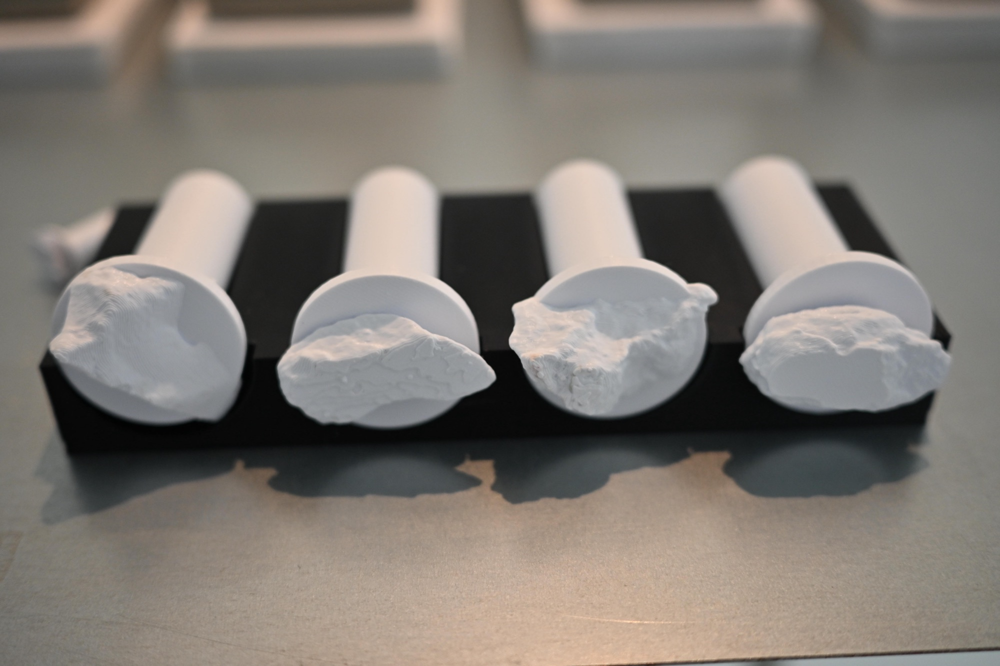

Station 01 / The Physical Touch
Stamps press into clay.
A stone becomes a seal.

Bezalel Academy · M.Des Industrial Design · 2026
A digital twin of the physical exhibition. The visitor moves through four stations — touch, code, vault, fiction — and watches matter transform into data, and back.
Station 01 / The Physical Touch
A stone becomes a seal.

Station 02 / Digital Anatomy
A stone becomes data.
Station 03 / Geological Cryptography
A stone becomes a key.
Station 04 / Geological Fictions
A stone becomes a fiction.
Loading stones…
Station 05 / Installation Documentation